Estàndards ESG · 2026
Confondre-les té conseqüències operatives reals.
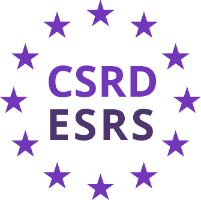
Comissió Europea · EFRAG
Directiva (UE) 2022/2464 de reporting de sostenibilitat. Substitueix el NFRD i obliga ~50.000 empreses europees (11.500 espanyoles) a publicar informació verificable sobre impactes, riscos i oportunitats ESG seguint els European Sustainability Reporting Standards (ESRS). Doble materialitat, format digital (XHTML) i verificació per tercers. Aplicació progressiva: grans cotitzades (FY2024), grans no cotitzades (FY2025), pimes cotitzades (FY2026) i pimes (FY2027).
Global Reporting Initiative · Amsterdam
Estàndard de reporting de sostenibilitat més usat al món: el 78% de les grans empreses europees i el 70%+ de l'IBEX 35 hi reporten. Estructura modular: Universal Standards (GRI 1-3), Topic Standards (GRI 200 econòmic, 300 ambiental, 400 social) i Sector Standards. Format de material topics amb participació de stakeholders. Actualització 2021 amb enfocament en impactes reals i drets humans. Convergència activa amb ESRS via mapping EFRAG-GRI.
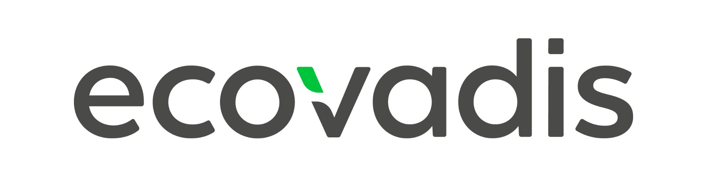
EcoVadis · París
Rating de sostenibilitat corporativa amb metodologia pròpia basada en 21 criteris agrupats en 4 àrees: Environment, Labor & Human Rights, Ethics i Sustainable Procurement. Puntuació 0-100 amb medalles (bronze, plata, or, platí). L'estàndard de facto per a proveïdors: més de 130.000 empreses avaluades, integrat als processos de compra de grans corporacions.
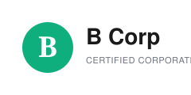
B Lab Global · Estats Units
Certificació d'empreses amb propòsit de B Lab. Avalua l'impacte positiu d'una empresa en treballadors, comunitat, entorn i clients mitjançant el B Impact Assessment (BIA): més de 200 preguntes, puntuació mínima de 80 sobre 250. Recertificació cada 3 anys amb requisits legals creixents d'estatut B Corp.
MSCI Inc. · Nova York
Rating ESG per a inversors amb escala AAA-CCC (líder, mitjà, retardatari). Avalua exposició a riscos ESG (10 temes, 35 categories) i la gestió d'aquests riscos en relació amb els competidors del sector. És el rating que miren els gestors d'actius i fons d'inversió a l'hora de construir carteres.
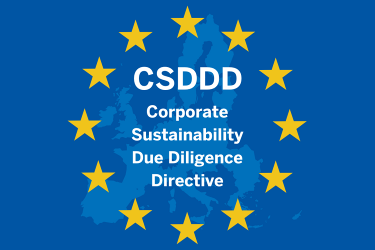
Comissió Europea · DG Justice
Directiva (UE) 2024/1760 de due diligence en drets humans i sostenibilitat. Obliga empreses a identificar, prevenir, mitigar i explicar els impactes adversos sobre drets humans i medi ambient a la seva cadena de valor. Aplicació progressiva des del 2027 per grans empreses, amb responsabilitat civil i supervisió administrativa.
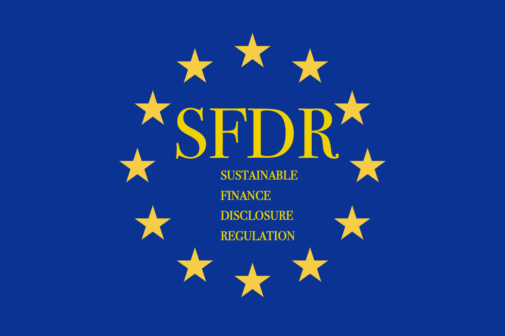
Comissió Europea · DG FISMA
Reglament (UE) 2019/2088 de divulgació de finances sostenibles. Classifica productes financers en 3 categories: Article 6 (no sostenible), Article 8 (promou característiques ambientals/socials) i Article 9 (objectiu sostenible). Obliga a publicar indicadors PAI (Principal Adverse Impacts) i nivell d'alineació amb la Taxonomia.
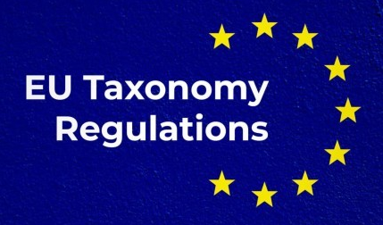
Comissió Europea · DG FISMA
Reglament (UE) 2020/852 que classifica activitats econòmiques com a sostenibles. Defineix què és verd amb criteris tècnics de screening per a 6 objectius ambientals (mitigació, adaptació, aigua, economia circular, contaminació, biodiversitat). Obliga a reportar el % de facturació, CapEx i OpEx alineats.
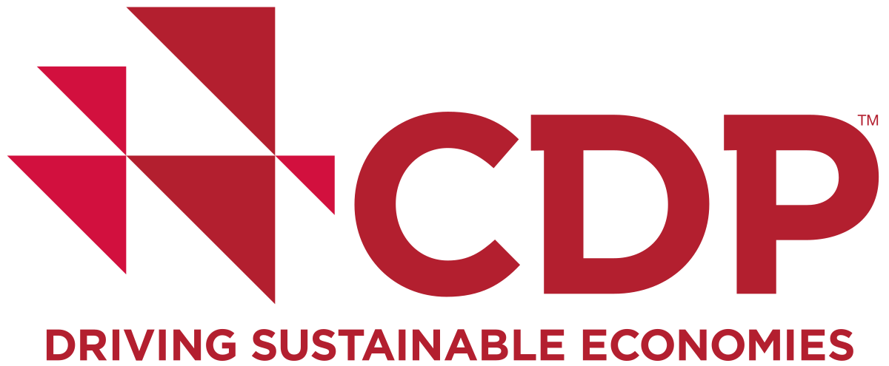
CDP · Londres
Sistema global de disclosure ambiental per a clima, aigua i boscos. Les empreses responen qüestionaris anuals estandarditzats (alineats amb TCFD) i reben una puntuació A-F. Més de 23.000 empreses hi participen, sovint per demanda de clients i inversors. Les puntuacions A són un senyal de lideratge climàtic.
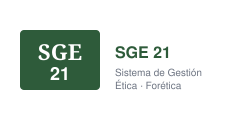
Forética · Madrid
Sistema de Gestió Ètica i Socialment Responsible, gestionat per Forética (2000). Únic estàndard ESG desenvolupat a Espanya i certificable. Es basa en 9 àrees de gestió (governança, clients, proveïdors, persones, entorn social i ambiental...) amb criteris verificables i auditoria externa independent.
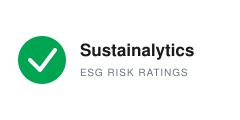
Morningstar Sustainalytics · Amsterdam
Rating de risc ESG per a inversors, ara propietat de Morningstar. Escala de 5 nivells: Negligible, Low, Medium, High, Severe (sobre 40+). Mesura el risc ESG no gestionat: exposició a temes materials menys gestió d'aquests riscos. Complementari a MSCI, amb enfocament de risc en lloc de qualitat.
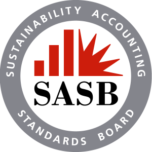
IFRS Foundation · ISSB
Sustainability Accounting Standards Board, ara integrat a l'ISSB (IFRS Sustainability Disclosure Standards). Estàndards de reporting sectorial (77 indústries) que identifiquen els temes financerament materials de cada sector amb mètriques quantitatives. Base de l'IFRS S1 i S2.
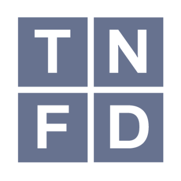
Taskforce on Nature-related Financial Disclosures
Framework global per reportar dependències, impactes, riscos i oportunitats relacionats amb la natura. Llançat el setembre 2023 amb 14 recomanacions de disclosure agrupades en 4 pilars (Governança, Estratègia, Gestió de riscos, Mètriques i objectius). El germà natural del TCFD per a la biodiversitat.
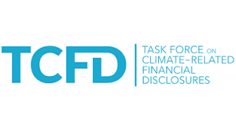
Financial Stability Board (FSB) · 2017
Taskforce on Climate-related Financial Disclosures. Framework per reportar riscos i oportunitats financeres climàtiques. 4 pilars: Governança, Estratègia, Gestió de riscos, Mètriques i objectius. Adoptat per més de 1.000 organitzacions; les seves recomanacions s'han integrat a ISSB (IFRS S2) i ara també a la taxonomia climàtica.
Comissió Europea · DG ENV
Eco-Management and Audit Scheme. Sistema comunitari d'eco-gestió i auditoria regulat pel Reglament (UE) 2017/1505. Voluntari però reconegut oficialment: declara impactes ambientals amb una verificació externa i publica una declaració ambiental validada. És el sistema de gestió ambiental més exigent de la UE.
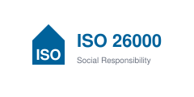
ISO · Ginebra (2010)
Guia internacional de responsabilitat social publicada per ISO el 2010. NO certificable (a diferència de la majoria d'estàndards ISO): ofereix orientació sobre 7 matèries fonamentals (governança, drets humans, pràctiques laborals, medi ambient, pràctiques justes d'operació, consumidors, comunitat) per integrar la RS a l'estratègia.
Cap estàndard no coincideix amb el filtre. Prova una altra combinació.